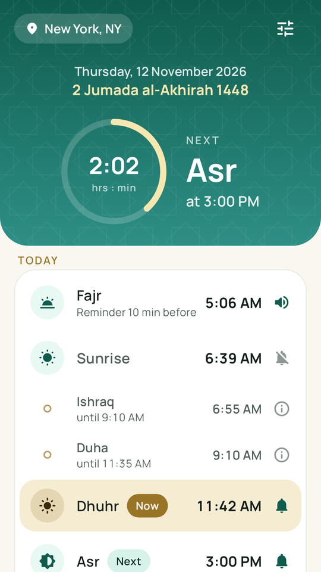
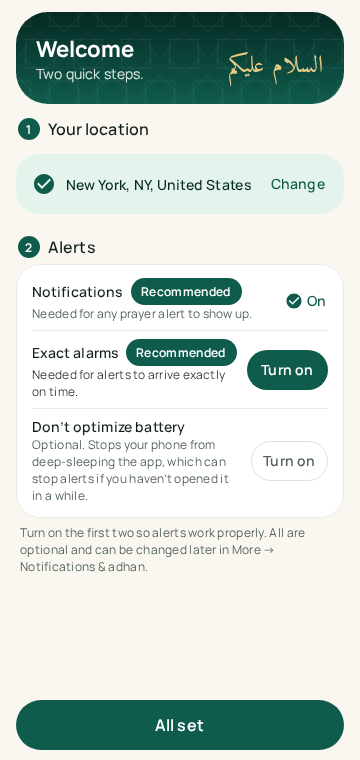
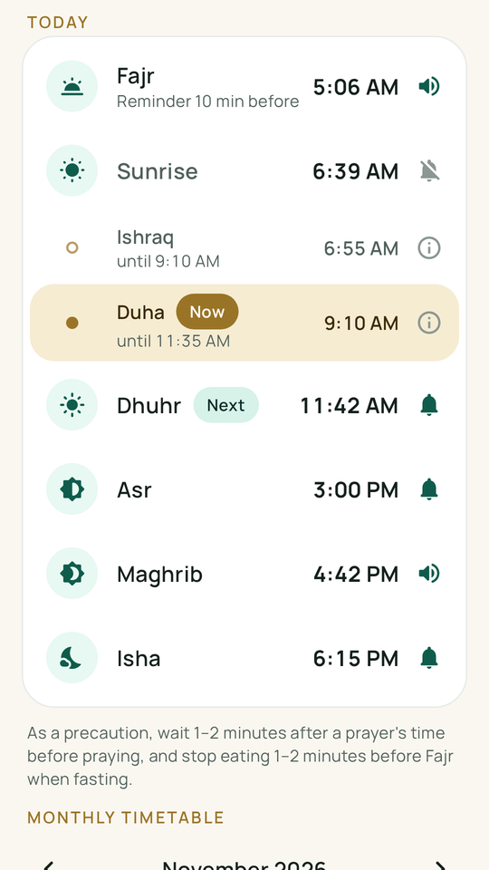
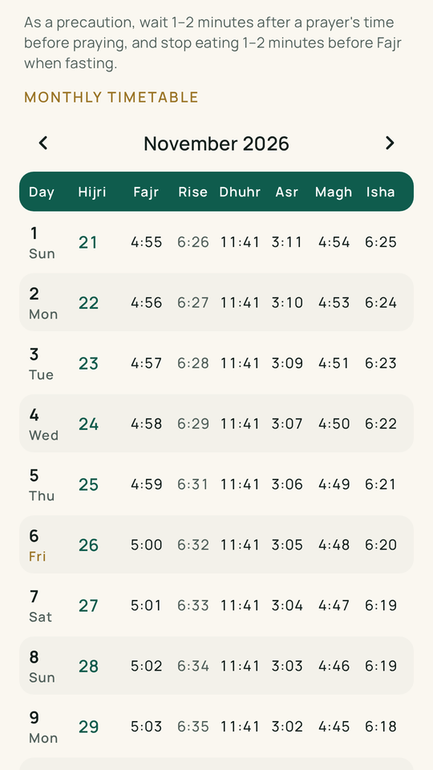
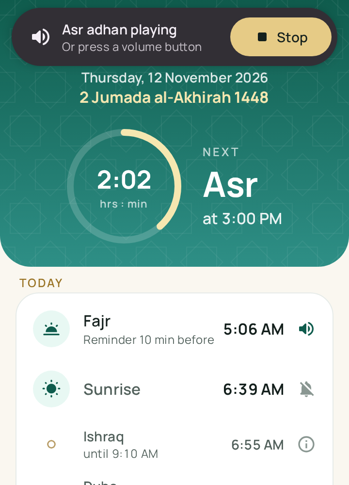
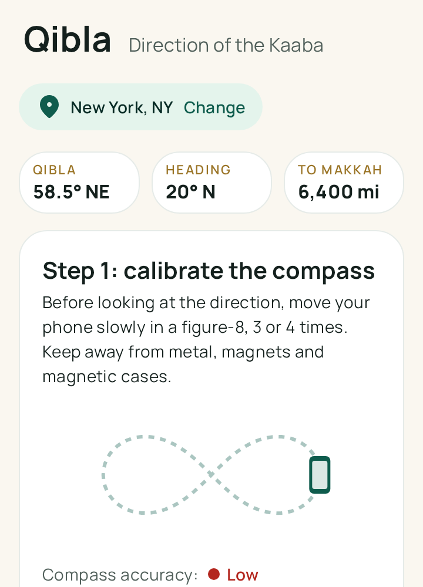
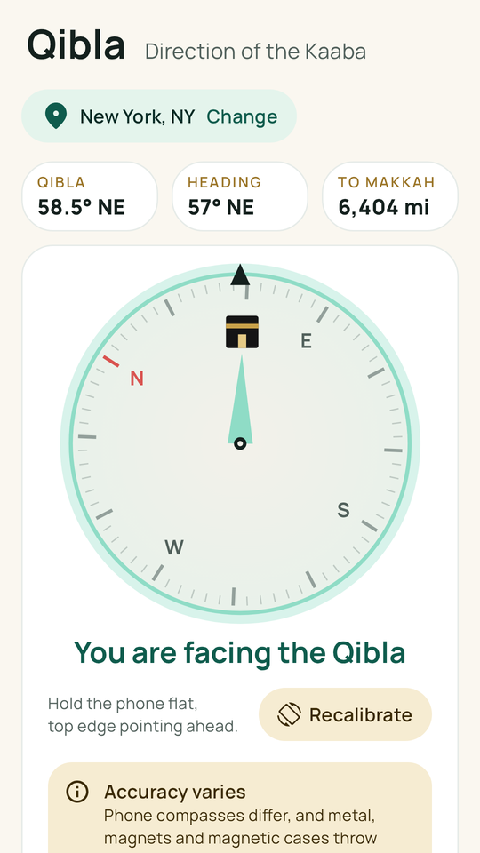
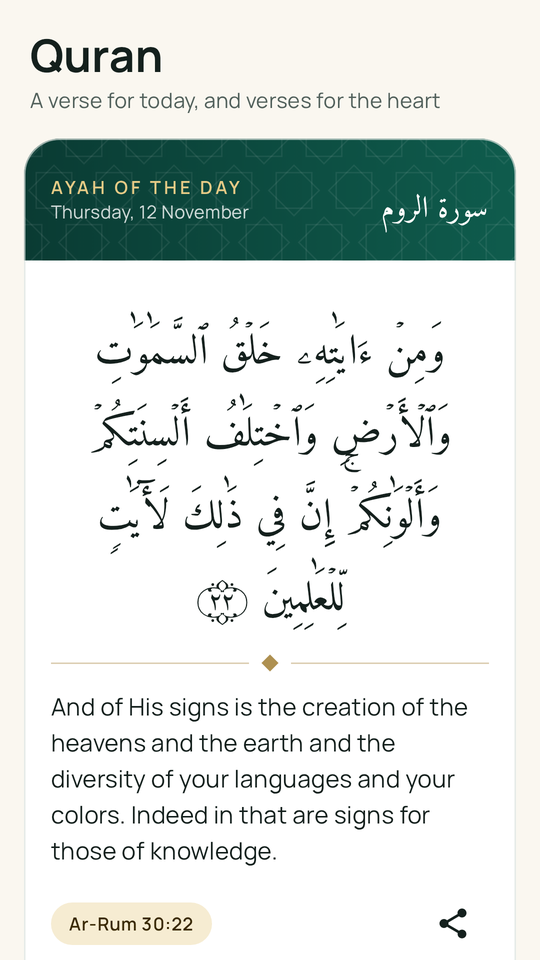
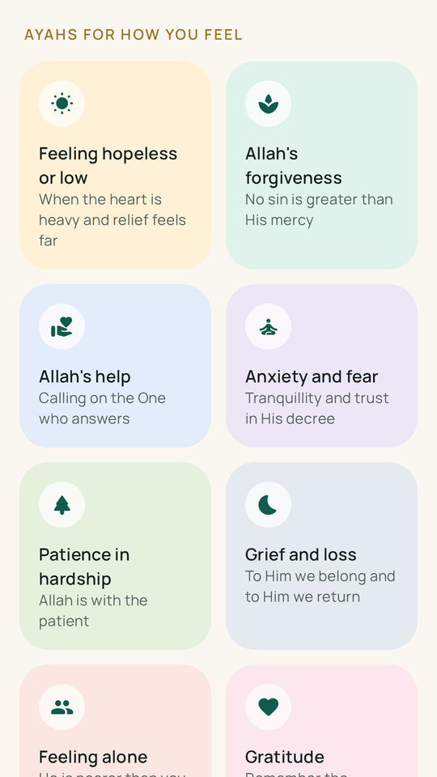
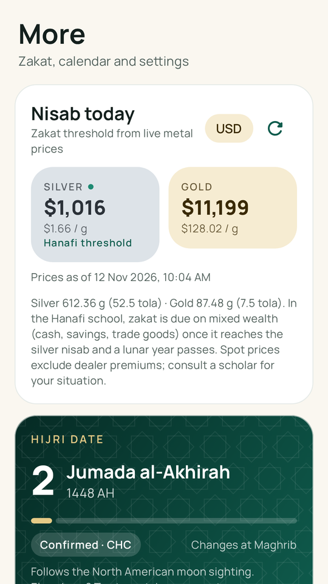

Prayer times you can rely on.
Accurate Hanafi prayer times, the adhan, a Qibla compass, the Hijri date by moon sighting, and a verse of the Quran each day. Everything works offline.
- Works offline
- No ads
- No tracking
- Karachi 18° · Hanafi Asr
- Built-in Makkah adhan

Everything you need for the day's prayers
Tap any card to jump to how it works.
Accurate prayer times
Karachi method with Hanafi Asr, calculated on your phone, rounded so a prayer never shows early.
Adhan & alerts
A notification, the built-in Makkah adhan, or off, for each prayer, plus optional reminders.
Ishraq & Duha
The two forenoon prayers shown under Sunrise, following the Hanafi rulings.
Qibla compass
Points to the Kaaba, with a calibration step first and a warning when accuracy is low.
Ayah of the day
Arabic and English with a short tafsir, plus ayahs grouped by how you feel.
Hijri date by sighting
Follows the Central Hilal Committee of North America and changes at Maghrib. Adjustable for other countries.
Today's nisab
The zakat threshold from live gold and silver prices, in 12 currencies.
Home-screen widgets
Today's times, or the next prayer with a live countdown, in several sizes.
Set up in two quick steps
The first time you open the app, a short welcome screen asks for two things.
- Your location. Type your city (the list works offline), tap Use my location to fill it in once, or tap Enter coordinates. Your city then appears with a tick. Tap Change if it's not right.
- Alerts. Turn on Notifications and Exact alarms, both marked Recommended, so alerts work properly. Don't optimize battery is optional, but it helps on phones that put apps to sleep.
- Tap All set. That's it.

Today at a glance
The top of the Prayer page shows today's Gregorian and Hijri dates, and a ring counting down to the next prayer. The ring fills as the current prayer's time passes.
- The list shows Fajr, Sunrise, Dhuhr, Asr, Maghrib and Isha. The current prayer is highlighted with Now, and the next one is marked Next.
- The icon on the right of each row shows its alert: a speaker for the adhan, a bell for a notification, or a crossed-out bell for off.
- Tap any prayer to change its alert and set a reminder.
- Tap the location at the top to change your city, or the sliders icon to change how times are calculated.
Ishraq and Duha
Two smaller rows under Sunrise show the optional forenoon prayers. Tap either one for an explanation.
| Prayer | Starts | Ends |
|---|---|---|
| Ishraq | 15 minutes after sunrise | When a quarter of the day (sunrise to sunset) has passed |
| Duha | When Ishraq ends | 5 minutes before zawal, the sun's highest point, as a precaution |
Based on Askimam fatwa 124093 (Hanafi). Ishraq is two or four rak'at, and Duha four to twelve. These rows have no alerts.
Monthly timetable
Scroll down for the whole month, with the Hijri date beside every day. Use the arrows to move between months, and This month to come back. Fridays are highlighted. A small dot next to a Hijri date means it's an estimate until the moon-sighting announcement.


Adhan, notification, or off
Each prayer has its own alert. New installs use a regular notification for all five prayers, and none for Sunrise.
| Mode | What happens at prayer time |
|---|---|
| Notification | A notification with your phone's notification sound. |
| Adhan | The full adhan plays, using your alarm volume, with a Stop button. |
| Off | Nothing. |
How to change an alert
- On the Prayer page, tap the prayer. Or go to More → Notifications & adhan to see all of them.
- Pick Adhan, Notification or Off.
- Optionally turn on Reminder before and choose 5 to 60 minutes.
The adhan sound
- The Makkah adhan (Masjid al-Haram, recited by Mansour al-Zahrani) is built in and plays for every prayer, including Fajr.
- To use your own adhan, go to More → Notifications & adhan → Adhan sound → Choose and pick an audio file on your phone. You can set a separate one for Fajr. Reset goes back to the built-in adhan.
- Silent or vibrate mode: by default the adhan doesn't play then. You get a vibration and a silent notification instead. To play it anyway, turn on Play adhan when phone is on silent/vibrate.
Try it out
In More → Notifications & adhan → Test:
- Play adhan now: plays the adhan straight away.
- Notify in 10 s: sends a test notification. It's not the adhan.
- Adhan in 1 minute: the real alarm path. Lock your phone and wait.
Stopping the adhan
There are three ways, so you can always silence it quickly:
- Tap Stop on the notification. It's visible without expanding it.
- Press either volume button, like an alarm clock.
- Inside the app, tap Stop on the dark bar at the top of the screen.
Making sure alerts arrive on time
Android can delay apps to save battery. Three settings keep your alerts on the minute:
| Setting | Why it matters |
|---|---|
| Notifications (recommended) | Needed for any prayer alert to show up. |
| Exact alarms (recommended) | Needed for alerts to arrive exactly on time. Without it they can be a few minutes late, and the adhan plays as a normal notification. |
| Don't optimize battery (optional) | Stops your phone from deep-sleeping the app, which can stop alerts if you haven't opened it in a while. |
Check them any time in More → Notifications & adhan → Reliability check. If something is off, a notice also appears under More → Settings.
Alarm-clock mode is on by default. It schedules alerts the way an alarm clock does, so battery saver can't delay them. Your phone may show a small alarm icon in the status bar.

Find the Qibla
- Calibrate first. The tab opens on a calibration step. Move your phone slowly in a figure-8, 3 or 4 times, away from metal, magnets and magnetic cases.
- Watch Compass accuracy rise to High. The compass then appears by itself, or tap Show the Qibla direction.
- Hold the phone flat with the top edge pointing ahead, and turn until it says You are facing the Qibla. The ring turns green and the phone vibrates.
- If accuracy drops, a yellow warning appears and the needle turns grey. Don't trust the direction until you recalibrate.
- Recalibrate under the compass brings the calibration step back.
- An Accuracy varies note sits right under the direction, as a reminder that phone compasses differ and are thrown off by metal and magnets.
- The tiles underneath show the Qibla bearing, your current heading and your distance to Makkah in miles.
- No compass sensor? The app shows the bearing in degrees from true north, so you can use a physical compass.


A verse for today, and verses for the heart
Ayah of the day
Every day shows a different ayah, mostly from the middle of the Quran, in Arabic with an English translation and a short tafsir (Al-Mukhtasar). Tap Tafsir to open or close it, and the share icon to send the ayah to someone.
Ayahs for how you feel
Ten collections of ayahs for different moments:
- Feeling hopeless or low · Allah's forgiveness · Allah's help
- Anxiety and fear · Patience in hardship · Grief and loss
- Feeling alone · Gratitude · Seeking guidance and ease · Illness and distress
The English translation is shown exactly as published by QuranEnc.com, footnotes included. A translation conveys meaning; it isn't the Quran itself.


Nisab, Hijri calendar and settings
Nisab today
Tap the refresh icon to fetch today's gold and silver prices. This needs internet; the last prices are kept. Choose your currency from the pill next to it. There are 12 to choose from.
- Silver nisab: 612.36 g (52.5 tola). In the Hanafi school this is the threshold for mixed wealth such as cash, savings and trade goods.
- Gold nisab: 87.48 g (7.5 tola).
- Spot prices exclude dealer premiums. Consult a scholar about your own situation.
Hijri date
- Follows the Central Hilal Committee of North America (moon sighting), not a calculated calendar.
- Changes at Maghrib, as the Islamic day begins at sunset.
- Estimated means the month hasn't been announced yet. On the night of the sighting, a note may say the date could change by a day.
- New announcements download automatically when available. Tap the Hijri card for the details, a manual ±2-day adjustment, and a custom update file.

Widgets
Long-press an empty spot on your home screen, tap Widgets, find Prayer Times, and drag one onto the screen. Both widgets can be resized, and their layout adapts to the size.
How the times are calculated
Times are calculated on your phone from the sun's position at your saved location, using the open-source Adhan library. No internet is needed.
| Setting | Default | Notes |
|---|---|---|
| Method (Fajr and Isha) | University of Islamic Sciences, Karachi: 18° / 18° | Also ISNA, Muslim World League, Moonsighting Committee, Egyptian, Umm al-Qura, or custom angles. |
| Asr | Hanafi (shadow twice the object's length) | Or Shafi'i, Maliki and Hanbali (one length). |
| Dhuhr | 1 minute after zawal | Adjustable from 0 to 10 minutes. |
| Maghrib | 1 minute after sunset | Adjustable from 0 to 10 minutes. |
| Precaution minutes | 0 for every prayer | Add or subtract up to 30 minutes per prayer, for example to match your masjid. |
| High latitudes | Middle of the night | Or one-seventh of the night, or the twilight-angle rule. |
Rounding
Every prayer start is rounded up to the minute and sunrise is rounded down, so a prayer is never shown earlier than it begins. Fajr also gets a 30-second calibration before rounding. The times line up with IslamicFinder's published timetables to within a minute, and usually match exactly.
Change any of this from the sliders icon on the Prayer page, or in More → Prayer time calculation. Restore defaults brings back the Hanafi settings above.
Calculated times are exact to the minute, so leave a minute or two: wait 1–2 minutes before praying, and stop eating 1–2 minutes before Fajr when fasting.
Outside North America
The app works anywhere in the world, but its defaults suit North America and South Asia. If you live elsewhere, check these three things once:
| What | What to do |
|---|---|
| Calculation method | Countries use different Fajr and Isha angles. In More → Prayer time calculation, choose the method your masjid or country uses: Karachi, ISNA, Muslim World League, Moonsighting Committee, Egyptian, or Umm al-Qura. Some national methods (for example Turkey's Diyanet, Singapore or Indonesia) aren't listed yet; choose the closest one, or use Custom angles and the minute adjustments to match your local timetable. |
| Asr | The default is Hanafi. If you follow the Shafi'i, Maliki or Hanbali school, change Asr to the 1× shadow. |
| High latitudes | In places such as the UK, Scandinavia or Canada, the sky may never get dark enough in summer for the usual Fajr and Isha angles. The app then uses a high-latitude rule. Choose the one your local masjid uses. |
| Hijri date | Follows the North American moon sighting. To match your country, see Outside North America? under Hijri date. |
Where every setting lives
| I want to… | Go to |
|---|---|
| Change my city | Location button on the Prayer page, or More → Location |
| Change the calculation method, Asr or precaution minutes | Sliders icon on the Prayer page, or More → Prayer time calculation |
| Change a prayer's alert or add a reminder | Tap the prayer on the Prayer page, or More → Notifications & adhan |
| Use my own adhan, or a different one for Fajr | More → Notifications & adhan → Adhan sound |
| Play the adhan in silent mode | More → Notifications & adhan |
| Check that alerts will arrive on time | More → Notifications & adhan → Reliability check |
| Adjust the Hijri date | More → Hijri calendar |
| Change the nisab currency | The currency pill on the Nisab card in More |
| See credits and the privacy policy | More → About & sources |
| Open this guide or the privacy policy | More → Help |
Frequently asked questions
The adhan didn't play at prayer time
Check these in order:
- Is that prayer set to Adhan? New installs use a notification. Tap the prayer on the Prayer page to change it.
- Was your phone on silent or vibrate? By default the adhan only vibrates then. Turn on Play adhan when phone is on silent/vibrate to change this.
- Are exact alarms allowed? Without them the adhan falls back to a normal notification. See On-time alerts.
- Is your alarm volume turned up? The adhan follows the alarm volume, not the media volume.
I tapped "Notify in 10 s" but didn't hear the adhan
That button tests a regular notification on purpose. Use Play adhan now or Adhan in 1 minute to test the adhan.
My alerts arrive a few minutes late, or not at all
Open More → Notifications & adhan → Reliability check and turn on everything listed. On Samsung, Xiaomi, OnePlus and Huawei phones, follow the brand-specific steps on that screen too. Then use Adhan in 1 minute with the phone locked to confirm.
How do I stop the adhan?
Tap Stop on the notification, press either volume button, or tap Stop on the bar inside the app. It also stops by itself after the adhan finishes.
The times are a minute or two different from my masjid
Many masjids add a few minutes as a precaution. Add the same minutes to that prayer in More → Prayer time calculation → Precaution adjustments. If the difference is larger, check that the method and Asr setting match your masjid's timetable.
Should I pray exactly at the time shown?
Times are calculated to the minute, so as a precaution wait 1–2 minutes after a prayer's time before praying, and stop eating 1–2 minutes before Fajr when fasting.
I don't live in North America. Will the app work for me?
Yes, anywhere in the world. Check the calculation method, the Asr setting, the high-latitude rule and the Hijri date once, as described in Outside North America.
Why is the Hijri date different from another app?
This app follows actual moon sighting (the Central Hilal Committee of North America), which can differ by a day or two from calculated calendars such as Umm al-Qura. If you follow a different authority or live outside North America, turn off the Central Hilal Committee check and use the manual adjustment in More → Hijri calendar.
The Qibla compass seems wrong
Tap Recalibrate and move the phone in a figure-8 until accuracy shows High. Take off magnetic cases and move away from metal, speakers and laptops. Phone compasses vary, so confirm against a known direction when you can.
Does the app work without internet?
Yes. Prayer times, alerts, the Qibla, the Quran content and the monthly timetable all work offline. Internet is only used, optionally, for Hijri month announcements and for nisab metal prices when you tap refresh.
Does the app track me or share my location?
No. Your location stays on your phone and is never sent anywhere. There are no ads, no analytics and no accounts. See the privacy policy.
Sources and credits
| Quran text | Uthmani script from The Noble Qur'an Encyclopedia (QuranEnc.com), packaged by quran-json (CC BY 4.0). |
| English translation | Translation of the Meanings of the Noble Quran, English (Saheeh), issued by Noor International Center, from QuranEnc.com. Shown unmodified, with footnotes. |
| Tafsir | Al-Mukhtasar fi Tafsir al-Quran (English), Tafsir Center for Quranic Studies. |
| Adhan | Masjid al-Haram, Makkah, recited by Mansour al-Zahrani, from AlAdhan.com (Islamic Network). Copyright remains with the mu'adhin. |
| Hijri dates | Central Hilal Committee of North America (hilalcommittee.org). |
| Prayer calculation | Adhan 2 by Batoul Apps (MIT License). |
| Cities | GeoNames (CC BY 4.0). |
| Metal prices | gold-api.com. |
| Fonts | Manrope and Amiri Quran, SIL Open Font License 1.1. |